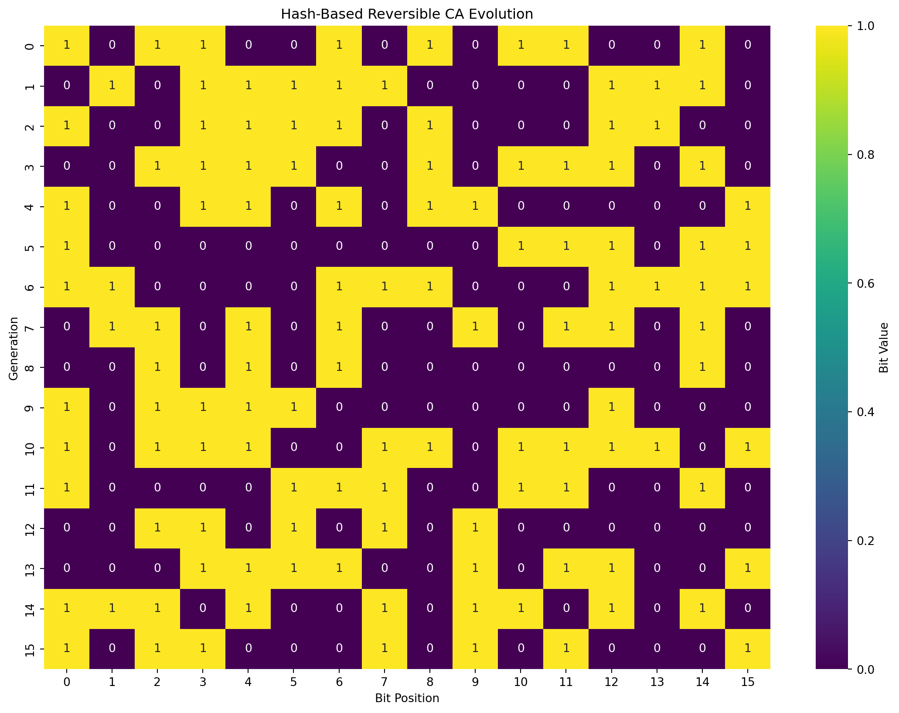
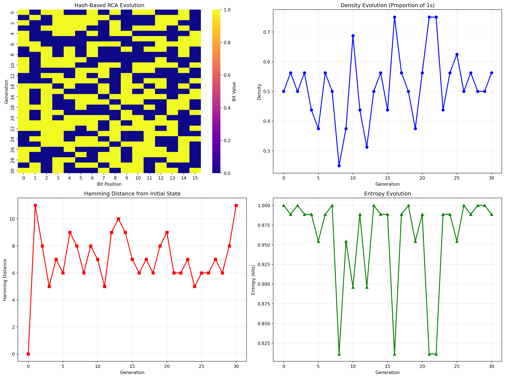
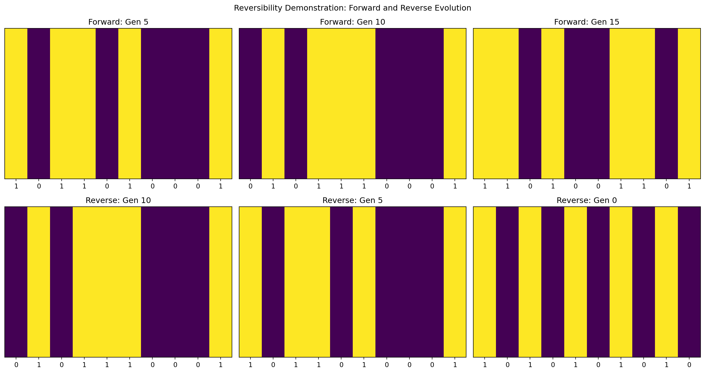

import numpy as np
import matplotlib.pyplot as plt
import seaborn as sns
from typing import Callable, List
import hashlib
class ReversibleCA:
def __init__(self, initial_state: List[int], decision_func: Callable):
"""
Initialize the Reversible Cellular Automata
Args:
initial_state: Binary sequence as list of 0s and 1s
decision_func: Function that takes surrounding bits and returns True (FLIP) or False (KEEP)
"""
self.initial_state = np.array(initial_state)
self.current_state = np.array(initial_state)
self.decision_func = decision_func
self.history = [self.current_state.copy()]
def get_surrounding_bits(self, position: int) -> np.ndarray:
"""Get all bits except the one at the current position"""
n = len(self.current_state)
surrounding = np.concatenate([
self.current_state[:position],
self.current_state[position+1:]
])
return surrounding
def evolve_generation(self):
"""Evolve one complete generation - updating each bit immediately as we traverse"""
for i in range(len(self.current_state)):
# Get surrounding bits from CURRENT state (which updates as we go)
surrounding_bits = self.get_surrounding_bits(i)
# Make decision based only on surrounding bits
should_flip = self.decision_func(surrounding_bits, i)
if should_flip:
self.current_state[i] = 1 - self.current_state[i] # Flip immediately
# Otherwise keep the bit as is
# Store the final state after all bits have been processed
self.history.append(self.current_state.copy())
def reverse_generation(self):
"""Reverse one generation by traversing in reverse order and updating bit by bit"""
if len(self.history) <= 1:
print("Cannot reverse further - at initial state")
return
# Remove current state from history
self.history.pop()
# Traverse in reverse order (from last bit to first) and update immediately
for i in reversed(range(len(self.current_state))):
# Get surrounding bits from current state (which updates as we go backwards)
surrounding_bits = self.get_surrounding_bits(i)
# Apply same decision function
should_flip = self.decision_func(surrounding_bits, i)
# If decision says FLIP, then flip (this undoes the forward flip)
if should_flip:
self.current_state[i] = 1 - self.current_state[i]
def evolve_multiple(self, generations: int):
"""Evolve multiple generations"""
for _ in range(generations):
self.evolve_generation()
def get_history_matrix(self) -> np.ndarray:
"""Return evolution history as a 2D matrix for visualization"""
return np.array(self.history)Introduction
Traditional cellular automata are fascinating computational models where cells evolve based on local rules. However, most CA are irreversible - once you’ve computed the next generation, you can’t uniquely determine the previous state. Today, we’ll explore a novel reversible cellular automata (RCA) framework that maintains perfect reversibility through a clever constraint: never look at the current bit when making decisions.
The Core Principle
The key insight behind this RCA framework is elegantly simple:
For each bit in the sequence, make a FLIP or KEEP decision based solely on the surrounding bits, never the current bit itself.
This constraint is what preserves reversibility. If we included the current bit in our decision function, the reverse operation would lack sufficient information to determine whether a bit was originally flipped or kept.
Framework Implementation
Let’s start by implementing the core RCA framework:
Hash-Based Decision Function
For our demonstration, we’ll use a hash-based decision function that provides deterministic but pseudo-random behavior:
def hash_decision(surrounding_bits: np.ndarray, position: int) -> bool:
"""Use hash of surrounding bits and position to make decision"""
# Convert to string for hashing
bit_string = ''.join(map(str, surrounding_bits)) + str(position)
hash_value = int(hashlib.md5(bit_string.encode()).hexdigest(), 16)
return hash_value % 2 == 1The hash function takes the surrounding bits (excluding the current position) and the position index, creates a deterministic hash, and returns True (FLIP) if the hash is odd, False (KEEP) if even.
Demonstration: Hash-Based RCA Evolution
Let’s see the hash-based RCA in action:
# Create initial binary sequence
initial_sequence = [1, 0, 1, 1, 0, 0, 1, 0, 1, 0, 1, 1, 0, 0, 1, 0]
print(f"Initial sequence: {initial_sequence}")
# Create RCA with hash decision
rca_hash = ReversibleCA(initial_sequence, hash_decision)
# Evolve for several generations
rca_hash.evolve_multiple(15)
# Visualize evolution
history_matrix = rca_hash.get_history_matrix()
plt.figure(figsize=(14, 10))
sns.heatmap(history_matrix, cmap='viridis', cbar_kws={'label': 'Bit Value'},
xticklabels=True, yticklabels=True, annot=True, fmt='d')
plt.title('Hash-Based Reversible CA Evolution')
plt.xlabel('Bit Position')
plt.ylabel('Generation')
plt.show()
print(f"After 15 generations: {rca_hash.current_state}")Initial sequence: [1, 0, 1, 1, 0, 0, 1, 0, 1, 0, 1, 1, 0, 0, 1, 0]
After 15 generations: [1 0 1 1 0 0 0 1 0 1 0 1 0 0 0 1]Testing Reversibility
The most crucial property of our RCA is perfect reversibility. Let’s verify this works correctly:
def test_reversibility(initial_state: List[int], decision_func: Callable, generations: int):
"""Test that the RCA is truly reversible"""
# Create RCA and evolve forward
rca = ReversibleCA(initial_state, decision_func)
original_state = rca.current_state.copy()
print(f"Original state: {original_state}")
# Evolve forward
rca.evolve_multiple(generations)
forward_state = rca.current_state.copy()
print(f"After {generations} generations: {forward_state}")
# Now reverse back
for _ in range(generations):
rca.reverse_generation()
reversed_state = rca.current_state.copy()
print(f"After reversing {generations} generations: {reversed_state}")
# Check if we're back to original
is_reversible = np.array_equal(original_state, reversed_state)
print(f"Successfully reversed: {is_reversible}")
print(f"Difference: {original_state - reversed_state}")
return is_reversible
# Test the hash decision function
print("=== Testing Hash Decision Function ===")
test_state = [1, 0, 1, 1, 0, 0, 1, 0, 1, 0]
test_reversibility(test_state, hash_decision, 8)=== Testing Hash Decision Function ===
Original state: [1 0 1 1 0 0 1 0 1 0]
After 8 generations: [0 0 0 0 1 1 1 0 0 1]
After reversing 8 generations: [1 0 1 1 0 0 1 0 1 0]
Successfully reversed: True
Difference: [0 0 0 0 0 0 0 0 0 0]TrueStep-by-Step Evolution Analysis
Let’s trace through a few generations to understand how the hash function makes decisions:
def analyze_step_by_step(initial_state: List[int], generations: int = 3):
"""Analyze the evolution step by step"""
rca = ReversibleCA(initial_state, hash_decision)
print(f"Generation 0: {rca.current_state}")
for gen in range(generations):
print(f"\n--- Evolution to Generation {gen + 1} ---")
# Show decision for each bit
current = rca.current_state.copy()
decisions = []
for i in range(len(current)):
surrounding = rca.get_surrounding_bits(i)
decision = hash_decision(surrounding, i)
decisions.append("FLIP" if decision else "KEEP")
print(f"Bit {i}: surrounding={surrounding}, decision={decisions[i]}")
# Evolve one generation
rca.evolve_generation()
print(f"Generation {gen + 1}: {rca.current_state}")
print(f"Decisions: {decisions}")
# Run step-by-step analysis
analyze_step_by_step([1, 0, 1, 0, 1, 0, 1, 0], 3)Generation 0: [1 0 1 0 1 0 1 0]
--- Evolution to Generation 1 ---
Bit 0: surrounding=[0 1 0 1 0 1 0], decision=FLIP
Bit 1: surrounding=[1 1 0 1 0 1 0], decision=KEEP
Bit 2: surrounding=[1 0 0 1 0 1 0], decision=KEEP
Bit 3: surrounding=[1 0 1 1 0 1 0], decision=KEEP
Bit 4: surrounding=[1 0 1 0 0 1 0], decision=FLIP
Bit 5: surrounding=[1 0 1 0 1 1 0], decision=KEEP
Bit 6: surrounding=[1 0 1 0 1 0 0], decision=FLIP
Bit 7: surrounding=[1 0 1 0 1 0 1], decision=FLIP
Generation 1: [0 1 0 1 0 1 1 0]
Decisions: ['FLIP', 'KEEP', 'KEEP', 'KEEP', 'FLIP', 'KEEP', 'FLIP', 'FLIP']
--- Evolution to Generation 2 ---
Bit 0: surrounding=[1 0 1 0 1 1 0], decision=KEEP
Bit 1: surrounding=[0 0 1 0 1 1 0], decision=KEEP
Bit 2: surrounding=[0 1 1 0 1 1 0], decision=FLIP
Bit 3: surrounding=[0 1 0 0 1 1 0], decision=KEEP
Bit 4: surrounding=[0 1 0 1 1 1 0], decision=FLIP
Bit 5: surrounding=[0 1 0 1 0 1 0], decision=FLIP
Bit 6: surrounding=[0 1 0 1 0 1 0], decision=KEEP
Bit 7: surrounding=[0 1 0 1 0 1 1], decision=KEEP
Generation 2: [0 1 1 0 1 1 1 1]
Decisions: ['KEEP', 'KEEP', 'FLIP', 'KEEP', 'FLIP', 'FLIP', 'KEEP', 'KEEP']
--- Evolution to Generation 3 ---
Bit 0: surrounding=[1 1 0 1 1 1 1], decision=FLIP
Bit 1: surrounding=[0 1 0 1 1 1 1], decision=FLIP
Bit 2: surrounding=[0 1 0 1 1 1 1], decision=KEEP
Bit 3: surrounding=[0 1 1 1 1 1 1], decision=KEEP
Bit 4: surrounding=[0 1 1 0 1 1 1], decision=KEEP
Bit 5: surrounding=[0 1 1 0 1 1 1], decision=FLIP
Bit 6: surrounding=[0 1 1 0 1 1 1], decision=FLIP
Bit 7: surrounding=[0 1 1 0 1 1 1], decision=FLIP
Generation 3: [1 0 1 0 1 0 1 0]
Decisions: ['FLIP', 'FLIP', 'KEEP', 'KEEP', 'KEEP', 'FLIP', 'FLIP', 'FLIP']Pattern Visualization and Analysis
Let’s create comprehensive visualizations to understand the patterns that emerge:
def create_comprehensive_analysis(initial_state: List[int], generations: int = 25):
"""Create comprehensive analysis with multiple visualizations"""
rca = ReversibleCA(initial_state, hash_decision)
rca.evolve_multiple(generations)
history = rca.get_history_matrix()
# Create subplots for different analyses
fig, ((ax1, ax2), (ax3, ax4)) = plt.subplots(2, 2, figsize=(16, 12))
# 1. Evolution heatmap
sns.heatmap(history, cmap='plasma', ax=ax1, cbar_kws={'label': 'Bit Value'})
ax1.set_title('Hash-Based RCA Evolution')
ax1.set_xlabel('Bit Position')
ax1.set_ylabel('Generation')
# 2. Density over time
densities = np.mean(history, axis=1)
ax2.plot(densities, 'b-', linewidth=2, marker='o')
ax2.set_title('Density Evolution (Proportion of 1s)')
ax2.set_xlabel('Generation')
ax2.set_ylabel('Density')
ax2.grid(True, alpha=0.3)
# 3. Hamming distance from initial state
initial = history[0]
hamming_distances = [np.sum(generation != initial) for generation in history]
ax3.plot(hamming_distances, 'r-', linewidth=2, marker='s')
ax3.set_title('Hamming Distance from Initial State')
ax3.set_xlabel('Generation')
ax3.set_ylabel('Hamming Distance')
ax3.grid(True, alpha=0.3)
# 4. Entropy over time
entropies = []
for generation in history:
p1 = np.mean(generation)
p0 = 1 - p1
if p1 > 0 and p0 > 0:
entropy = -p1 * np.log2(p1) - p0 * np.log2(p0)
else:
entropy = 0
entropies.append(entropy)
ax4.plot(entropies, 'g-', linewidth=2, marker='^')
ax4.set_title('Entropy Evolution')
ax4.set_xlabel('Generation')
ax4.set_ylabel('Entropy (bits)')
ax4.grid(True, alpha=0.3)
plt.tight_layout()
plt.show()
return rca
# Run comprehensive analysis
initial_seq = [1, 0, 1, 1, 0, 0, 1, 0, 1, 0, 1, 1, 0, 0, 1, 0]
comprehensive_rca = create_comprehensive_analysis(initial_seq, 30)
Reversibility Demonstration
Let’s create a visual demonstration of the reversibility:
def demonstrate_reversibility_visually():
"""Visual demonstration of forward and reverse evolution"""
initial_state = [1, 0, 1, 0, 1, 0, 1, 0, 1, 0]
rca = ReversibleCA(initial_state, hash_decision)
# Store states at different points
states = {
'initial': rca.current_state.copy()
}
# Forward evolution
for i in [5, 10, 15]:
rca.evolve_multiple(5 if i == 5 else 5)
states[f'forward_{i}'] = rca.current_state.copy()
# Reverse evolution
for i in [10, 5, 0]:
for _ in range(5):
rca.reverse_generation()
states[f'reverse_{i}'] = rca.current_state.copy()
# Create visualization
fig, axes = plt.subplots(2, 3, figsize=(15, 8))
# Forward evolution
for i, gens in enumerate([5, 10, 15]):
ax = axes[0, i]
state = states[f'forward_{gens}']
ax.imshow([state], cmap='viridis', aspect='auto')
ax.set_title(f'Forward: Gen {gens}')
ax.set_xticks(range(len(state)))
ax.set_xticklabels(state)
ax.set_yticks([])
# Reverse evolution
for i, gens in enumerate([10, 5, 0]):
ax = axes[1, i]
state = states[f'reverse_{gens}']
ax.imshow([state], cmap='viridis', aspect='auto')
ax.set_title(f'Reverse: Gen {gens}')
ax.set_xticks(range(len(state)))
ax.set_xticklabels(state)
ax.set_yticks([])
plt.suptitle('Reversibility Demonstration: Forward and Reverse Evolution')
plt.tight_layout()
plt.show()
# Verify perfect reversibility
initial = states['initial']
final_reverse = states['reverse_0']
print(f"Initial state: {initial}")
print(f"After reverse to 0: {final_reverse}")
print(f"Perfect reversibility: {np.array_equal(initial, final_reverse)}")
demonstrate_reversibility_visually()
Initial state: [1 0 1 0 1 0 1 0 1 0]
After reverse to 0: [1 0 1 0 1 0 1 0 1 0]
Perfect reversibility: TrueTheoretical Properties
Our hash-based RCA framework has several interesting theoretical properties:
Information Preservation
By never looking at the current bit when making decisions, we ensure that each bit flip is completely determined by its context. This means:
Every transformation is bijective (one-to-one mapping)
The reverse operation has complete information to undo any change
No information is lost during evolution
Hash Function Properties
The hash-based decision function provides: - Deterministic behavior: Same input always produces same output - Pseudo-randomness: Hash values appear random but are reproducible - Avalanche effect: Small changes in input produce large changes in hash - Uniform distribution: Hash values are evenly distributed
Computational Complexity
- Forward evolution: O(n²) per generation (n bits × n surrounding bits to check)
- Reverse evolution: O(n²) per generation (identical to forward)
- Space complexity: O(n × g) where g is the number of generations stored
Applications and Use Cases
This reversible cellular automata framework has several potential applications:
1. Cryptographic Applications
The perfect reversibility combined with the hash-based decision function makes this suitable for:
Stream ciphers where you need to encrypt and decrypt
Pseudo-random number generation with reproducible sequences
Key derivation functions that can be reversed
2. Simulation Applications
- Time-travel simulations: Perfect ability to go backward in time
- Debugging complex systems: Step forward and backward through states
- Checkpointing: Efficient storage of simulation states
3. Data Processing
- Reversible transformations: Apply complex transformations that can be undone
- Error detection: Verify data integrity by forward-reverse cycles
- Compression: Potentially useful for lossless compression schemes
Conclusion
This novel reversible cellular automata framework demonstrates that perfect reversibility can be achieved through a simple constraint: never look at the current bit when making decisions. The hash-based decision function provides rich, pseudo-random dynamics while maintaining complete reversibility.
Key insights:
Simple Constraint, Powerful Result: One rule enables perfect reversibility
Rich Dynamics: Complex patterns emerge despite the restriction
Perfect Information Preservation: No data is ever lost during evolution
Practical Applications: Useful for cryptography, simulation, and data processing
The framework shows that reversible computation doesn’t require complex mechanisms—sometimes elegance lies in simplicity.
Further Reading: Cellular Automata Theory
If you’re fascinated by cellular automata and want to dive deeper into the theoretical foundations, I highly recommend Stephen Wolfram’s “A New Kind of Science”. This groundbreaking work explores how simple computational rules can generate complex behaviors and has fundamentally shaped our understanding of cellular automata.
The book is available to read online for free at: https://www.wolframscience.com/nks/
Wolfram’s work provides essential context for understanding:
How simple rules create complex patterns
The relationship between computation and natural phenomena
Universal computation in cellular automata
Classification of cellular automata behaviors
The principle of computational equivalence
While Wolfram focuses primarily on irreversible CA, understanding his foundational work will give you deeper appreciation for why reversible CA (like our framework) represent such an interesting and novel direction in the field.
If you’re further interested in Reversible Cellular Automata, have a look a https://dmishin.github.io/js-revca/index.html. It’s a great reversible cellular automata simulator and follows the margolus framework of rules.
This framework proves that beautiful mathematics can emerge from simple constraints, opening new possibilities for reversible computation and its applications. Standing on the shoulders of giants like Wolfram, we can push the boundaries of what’s possible with cellular automata.